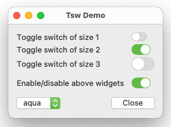

Tsw stands for Toggle switch and is a library package for Tcl/Tk versions 8.6 or higher. If the version is 8.6 then in addition it is required that the tksvg extension can be loaded into the interpreter (Tk versions 8.7 and 9.0 or higher have built-in SVG support). The package is written in pure Tcl/Tk code and contains:
A toggleswitch is a mega-widget consisting of a horizontal trough (a fully rounded filled rectangle) and a slider (a filled circle contained in the trunk). It can have one of two possible switch states: on or off. In the on state the slider is placed at the end of the trough, and in the off state at its beginning. The user can toggle between these two states with the mouse or the space key.
You can use the switchstate subcommand of the Tcl
command associated with a toggleswitch to change or query the widget's switch
state. By using the -command configuration option, you can
specify a script to execute whenever the switch state of the widget gets
toggled.
Tsw is available for free download from the Web page
https://www.nemethi.de
The distribution file is tsw1.0.tar.gz for UNIX and
tsw1_0.zip for Windows. These files contain the same
information, except for the additional carriage return character preceding
the linefeed at the end of each line in the text files for Windows.
Tsw is also included in tklib, which has the address
https://core.tcl.tk/tklib
Install the package as a subdirectory of one of the directories given by
the auto_path variable. For example, you can install it as
a subdirectory of the lib directory within your Tcl/Tk
installation (at the same level as the tk8.7 or
tk9.0 subdirectory).
To install Tsw on UNIX, cd to the desired directory
and unpack the distribution file tsw1.0.tar.gz:
gunzip -c tsw1.0.tar.gz | tar -xf -
On most UNIX systems this can be replaced with
tar -zxf tsw1.0.tar.gz
Both commands will create a directory named tsw1.0, with the
subdirectories demos, doc, and
scripts.
On Windows, use WinZip or some other program capable of unpacking
the distribution file tsw1_0.zip into the directory
tsw1.0, with the subdirectories demos,
doc, and scripts.
Notice that in tklib the Tsw demos directory is replaced with
the subdirectory tsw of the examples
directory. Please take this into account when reading the examples below.
To be able to access the commands and variables defined in the Tsw package, your scripts must contain one of the lines
package require tsw ?version? package require Tsw ?version?
You can use either one of the two statements above because the file
tsw.tcl contains both lines
package provide tsw ... package provide Tsw ...
You are free to remove one of these two lines from tsw.tcl if
you want to prevent the package from making itself known under two different
names. Of course, by doing so you restrict the argument of
package require to a single name.
Since the Tsw package is implemented in its own namespace called
tsw, you must either invoke the
namespace import tsw::toggleswitch
command to import the only public procedure of the tsw
namespace, or use the qualified name tsw::toggleswitch. In
the examples below we have chosen the latter approach.
To access Tsw variables, you must use qualified names.
There are only two Tsw variables that are designed to be accessed outside the
tsw namespace:
tsw::version holds the current version number
of the Tsw package.tsw::library holds the location of the Tsw
installation directory.The script TswDemo.tcl in the demos directory
creates four toggleswitch widgets and shows
how their appearance depends on the current theme, which can be selected with
the aid of the menu associated with a ttk::menubutton widget. In
addition, it demonstrates how to specify a script to execute whenever the
switch state of a toggleswitch gets toggled.

Here is the code that creates the four toggleswitch widgets:
package require Tk package require tsw wm title . "Tsw Demo" ttk::frame .tf ttk::frame .bf # # Create 3 toggleswitch widgets having different values of the -size option # set l1 [ttk::label .tf.l1 -text "Toggle switch of size 1"] set sw1 [tsw::toggleswitch .tf.sw1 -size 1] set l2 [ttk::label .tf.l2 -text "Toggle switch of size 2"] set sw2 [tsw::toggleswitch .tf.sw2 -size 2] $sw2 switchstate 1 set l3 [ttk::label .tf.l3 -text "Toggle switch of size 3"] set sw3 [tsw::toggleswitch .tf.sw3 -size 3] # # Create a toggleswitch widget of default size and set its -command option # set l4 [ttk::label .tf.l4 -text "Enable/disable above widgets"] set sw4 [tsw::toggleswitch .tf.sw4] $sw4 switchstate 1 $sw4 configure -command [list toggleWidgetsState $sw4]
We create the toggleswitch widgets by invoking the tsw::toggleswitch command. For
the first three toggleswitch widgets we also set the -size option to 1,
2, and 3, respectively. With the exception of
the themes vista, winnative, and
xpnative, this results in widgets of different physical
sizes. For the last toggleswitch we don't explicitly set this option,
hence it will have its default value 2. As seen in the
screenshots, in the case of the aqua theme the colors used when
drawing the toggleswitch widgets also depend on the system appearance (light
mode or dark mode) and the accent color.
For two of the four toggleswitch widgets we change the switch state from
the initial value 0 (off) to 1 (on) by invoking the
switchstate
subcommand of the associated Tcl command. In addition, for the last
toggleswitch we set the -command option to a script that will
be executed whenever the widget's switch state gets toggled. This
script invokes the procedure toggleWidgetsState implemented as
follows:
#------------------------------------------------------------------------------ # toggleWidgetsState # # Enables/disables the widgets in the first 3 grid rows, depending on the # switch state of the specified toggleswitch widget. #------------------------------------------------------------------------------ proc toggleWidgetsState sw { global l1 l2 l3 sw1 sw2 sw3 set stateSpec [expr {[$sw switchstate] ? "!disabled" : "disabled"}] foreach w [list $l1 $l2 $l3 $sw1 $sw2 $sw3] { $w state $stateSpec } }
This time the switchstate subcommand is invoked without the
optional argument, hence it returns the toggleswitch widget's current switch
state.
For the default theme, after changing the switch state of the
last toggleswitch from on to off, the window will look as shown in the
screenshot below:
The rest of the code is not Tsw-specific and for this reason is not shown here.
The script EditingOpts.tcl in the demos
directory is a slightly adapted version of the Tablelist demo script
tileWidgets.tcl, which demonstrates the interactive tablelist
cell editing with the aid of various Ttk widgets. The additional
functionality in this version is implemented in the procedures
configEditing and applySwitchState. The first
one, triggered by the "Configure Editing" button, opens a toplevel window
containing toggleswitch widgets for
configuring the editing-related tablelist options having boolean values,
proposed over the years by Tablelist users. This is a comfortable way
to test the effect of setting/clearing these boolean options.
The configEditing procedure is shown below:
package require Tk package require tsw package require tablelist_tile . . . #------------------------------------------------------------------------------ # configEditing # # Configures the editing-related tablelist options having boolean values with # the aid of toggleswitch widgets. #------------------------------------------------------------------------------ proc configEditing tbl { set top .top if {[winfo exists $top]} { raise $top focus $top return "" } toplevel $top wm title $top "Editing Options" set tf [ttk::frame $top.tf] set bf [ttk::frame $top.bf] # # Create the widgets corresponding to the # editing-related options with boolean values # set row 0 foreach opt { -autofinishediting -editendonfocusout -editendonmodclick -editselectedonly -forceeditendcommand -instanttoggle -showeditcursor } { lassign [$tbl configure $opt] option dbName dbClass default current set defaultStr [expr {$default ? "on" : "off"}] set l [ttk::label $tf.l$row -text "$opt ($defaultStr)"] if {$current != $default} { $l configure -foreground red3 } grid $l -row $row -column 0 -sticky w -padx 9p -pady {0 3p} set sw [tsw::toggleswitch $tf.sw$row] $sw switchstate $current ;# sets the switch state to $current $sw attrib default $default ;# saves $default as attribute value $sw configure -command [list applySwitchState $sw $l $tbl $opt] grid $sw -row $row -column 1 -sticky w -padx {0 9p} -pady {0 3p} incr row } . . . }
For each of the 7 editing-related options with boolean values, the
procedure displays the option's name and default value in a ttk::label, and
sets the switch state of the
corresponding toggleswitch widget to the option's current value. In
addition, it invokes the attrib subcommand of the Tcl command
associated with the toggleswitch to save the default as the value of the
widget's attribute of name default. In this way, the
widget "remembers" the default value in an object-oriented manner and can
retrieve it later without needing any external resources. For increased
user-friendliness, the label is displayed in the red3 foreground
color if the option's current value is different from the default one.
Whenever the toggleswitch widget's switch state gets toggled, the script
specified as the value of its -command option invokes the
applySwitchState procedure shown below:
#------------------------------------------------------------------------------ # applySwitchState # # Sets the configuration option opt of the tablelist tbl and the foreground # color of the ttk::label l according to the switch state of the toggleswitch # widget sw. #------------------------------------------------------------------------------ proc applySwitchState {sw l tbl opt} { set switchState [$sw switchstate] $tbl configure $opt $switchState set fgColor [expr {$switchState == [$sw attrib default] ? "" : "red3"}] $l configure -foreground $fgColor }
We set the specified tablelist option to the toggleswitch widget's switch
state, and also the label's foreground color, depending on the switch state
and the option's default value, which we retrieve by using the
attrib toggleswitch subcommand.